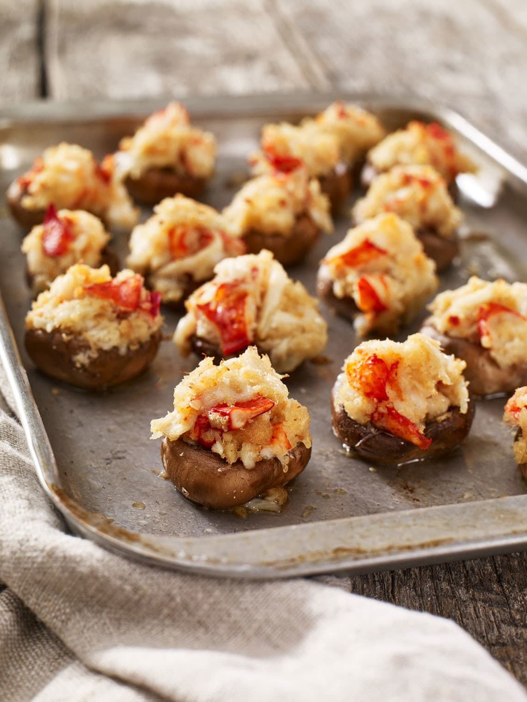

Crab and Lobster Stuffed Mushrooms

This is the result of trying to duplicate a seafood chain's recipe. Comes close enough, they're gone the minute they hit the table!
Ingredients:
- 3/4 cup melted butter, devided
- 1 pound fresh mushrooms, stems removed
- 1 cup crushed seasoned croutons
- 1 cup shredded mozzarella cheese (optional)
- 1 (6 ounce) can crabmeat, drained
- 1 pound lobster tail, cleaned and chopped
- 3 tablespoons minced garlic
- 1/4 cup shredded mozzarella hceese (optional)
Steps:
- Preheat the oven to 375 degress F (190 degrees C). Brush a large baking sheet with about 1/4 cup of melted butter. Arrange mushroom caps in a single layer over the baking sheet.
- In a mixing bowl mix together the crushed croutons, remaining 1/2 cup butter,shredded cheese, crabmeat, lobster, and garlic. Spoon into mushroom caps where the stems used to be.
- Bake for 10 to 12 minutes in the preheated oven, or until lightly browned on the top. Sprinkle with additional cheese if desired, and serve hot!
Home